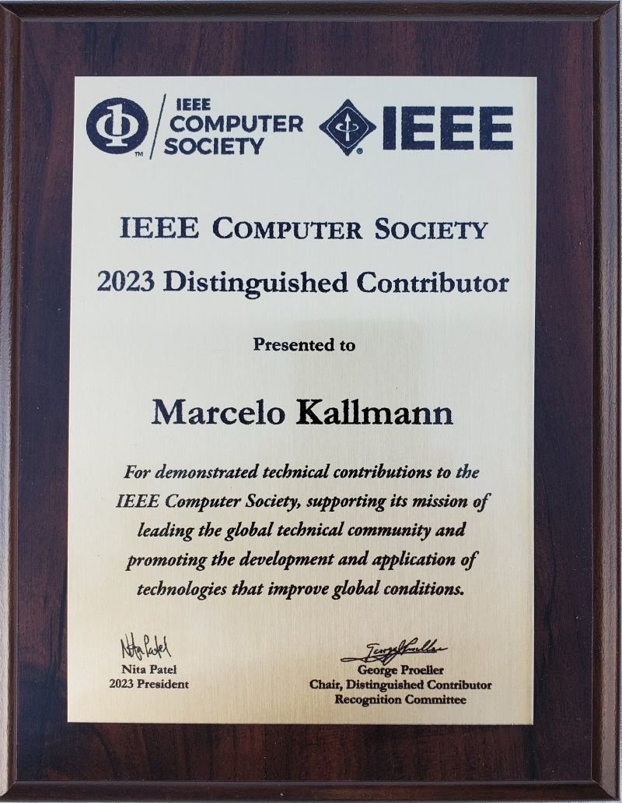
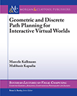

After that I joined UC Merced in 2005. These days my research interests are on motion planning algorithms with a focus on autonomous vehicles. I have served as program committee member for over 60 conferences, program co-chair for the 5th International Conference on Motion in Games (MIG), Associate Editor for ICRA 7 times, and as an Associate Editor for the Computer Animation and Virtual Worlds journal. At UC Merced I have established the computer graphics lab. My research was funded by NSF, ARO and CITRIS awards and my work on triangulations for path planning runs inside The Sims 4, the best selling PC game of 2014 and 2015. In 2023 I was recognized as an IEEE Distinguished Contributor.
Optimal Path Maps on the GPU
Renato Farias and Marcelo Kallmann
IEEE Transactions on Visualization and Computer Graphics (TVCG), 2019
[IEEE page]
[video]
The Effects of Avatars, Stereo Vision and Display Size on Reaching and Motion Reproduction
Carlo Camporesi and Marcelo Kallmann
IEEE Transactions on Visualization and Computer Graphics (TVCG), 2015
[IEEE page]
[video]
Planning Motions and Placements for Virtual Demonstrators
Yazhou Huang and Marcelo Kallmann
IEEE Transactions on Visualization and Computer Graphics (TVCG), 2015
[IEEE page]
[video]
Dynamic and Robust Local Clearance Triangulations
Marcelo Kallmann
ACM Transactions on Graphics (TOG) 33-5, 2014, presented at SIGGRAPH
[ACM page]
[video]
Analyzing Locomotion Synthesis with Feature-Based Motion Graphs
Mentar Mahmudi and Marcelo Kallmann
IEEE Transactions on Visualization and Computer Graphics (TVCG), 2012
[IEEE page]
[video]
Underwater Cloth Simulation with Fractional Derivatives
Oktar Ozgen, Marcelo Kallmann, Lynnete ES Ramirez and Carlos FM Coimbra
ACM Transactions on Graphics (TOG) 29-3, 2010, presented at SIGGRAPH
[ACM page]
[video]
Locally Homotopic Paths: Ensuring Consistent Paths in Hierarchical Path Planning
Tichakorn Wongpiromsarn, Marcelo Kallmann and Andreas Kolling
IEEE Robotics and Automation Letters (RA-L), 2024
[IEEE page]
Planar Max Flow Maps and Determination of Lanes with Clearance
Renato Farias and Marcelo Kallmann
Autonomous Robots, 2020
(Extended version of "GPU-Based Max Flow Maps in the Plane", RSS 2018.)
[video]
Path Planning for Coherent and Persistent Groups
Tianyu Huang, Mubbasir Kapadia, Norman I. Badler, and Marcelo Kallmann
IEEE International Conference on Robotics and Automation (ICRA), 2014
[IEEE page]
[video]
Planning Humanlike Actions in Blending Spaces
Yazhou Huang, Mentar Mahmudi and Marcelo Kallmann
IEEE/RSJ International Conference on Intelligent Robots and Systems (IROS), 2011
[video]
A Skill-Based Motion Planning Framework for Humanoids
Marcelo Kallmann, Yazhou Huang and Robert Backman
IEEE International Conference on Robotics and Automation (ICRA), 2010
[IEEE page]
[video]
Learning Humanoid Reaching Tasks in Dynamic Environments
Xiaoxi Jiang and Marcelo Kallmann
IEEE/RSJ International Conference on Intelligent Robots and Systems (IROS), 2007
[IEEE page]
Motion Planning Using Dynamic Roadmaps
Marcelo Kallmann and Maja Mataric´
IEEE International Conference on Robotics and Automation (ICRA), 2004
[IEEE page]

Geometric and Discrete Path Planning for Interactive Virtual Worlds
Marcelo Kallmann and Mubbasir Kapadia, 2016.
[Springer]
[Amazon]
[SIGGRAPH course]
Standalone Interactive Graphics (SIG) Toolkit